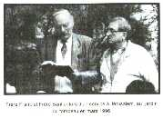

“Jésus-Christ est le même hier, aujourd’hui, et éternellement” (Hébreux 13.8).
LETTRE CIRCULAIRE N° 47
JANVIER 1997
Chers frères et soeurs,
Que la grâce et la paix de Dieu soient avec vous!Je vous salue tous très cordialement dans le nom de notre Seigneur Jésus-Christ par cette parole que la veuve de Sarepta adressa à Elie, après que celui-ci ait ressuscité son fils et qu’elle ait reçu la confirmation.
“Maintenant, à cela je connais que tu es un homme de Dieu, et que la parole de l’Eternel dans ta bouche est la vérité” (1 Rois 17.24).
Nous devons nous assurer de ces deux choses: D’une part si quelqu’un est véritablement un homme de Dieu, et d’autre part si la Parole de l’Eternel dans sa bouche est réellement la Vérité. Dieu a toujours confirmé la véracité de Sa Parole annoncée par Ses serviteurs.
La Parole de Dieu est la vérité, mais Elle doit être laissée telle qu’Elle est sortie de la bouche de Dieu. Cela a toujours été le signe distinctif d’un véritable prophète, lequel n’a été que le porte-voix, la bouche de Dieu, afin que Sa Parole puisse être exprimée dans une des langues compréhensibles sur la terre par les hommes.
Le Seigneur commanda à Son prophète Moïse: “Et maintenant va, et je serai avec ta bouche, et je t’enseignerai ce que tu diras” (Ex. 4.12). Mais il a aussi un autre ministère: c’est-à-dire que la Parole reçue par le prophète soit distribuée plus loin. Moïse devait mettre la Parole reçue de Dieu dans la bouche d’Aaron, afin qu’il la communique au peuple (v. 15,16). Il peut arriver que ceux qui transmettent cette Parole fassent comme Aaron lequel, étant pourtant tout proche du prophète, transgressa le premier commandement et fit d’autres dieux. Cependant ce n’est pas forcément des veaux d’or qu’ils feront. La fabrique d’idoles est toujours dans la haute conjoncture. L’aveuglement est ce qui est particulier en tout cela, et depuis toujours ces gens appellent à une danse avec l’idole sur l’autel, et qu’ils proclament: C’est une fête en l’honneur de l’Eternel, bien que quelque chose d’autre soit honoré.
Dans la bouche de tout homme appelé de Dieu, les paroles de Dieu sont la vérité comme elles l’ont été dans la bouche d’Elie; mais qu’en est-il auprès de ceux qui la transmettent? Les apôtres ont reçu la Parole révélée du Seigneur, telle qu’aujourd’hui encore elle doit être prêchée. Les prophètes et les apôtres se tenaient et se tiennent encore sous la direction et l’inspiration du Saint-Esprit. Les deux choses sont écrites: “Or le Seigneur, l’Eternel, ne fera rien, qu’il ne révèle son secret à ses serviteurs les prophètes” (Amos 3.7), comme également Paul parla de tout le conseil de Dieu (Act. 20.27 et autres) et du mystère qu’il n’avait pas été donné à connaître aux enfants des hommes “… comme il a été maintenant révélé à ses saints apôtres et prophètes par l’Esprit” (Eph. 3.5 et autres).
Il s’agit de la réalisation du glorieux “plan de salut de Dieu”, du “grand mystère” — Dieu révélé en Christ, Christ révélé dans Son Eglise. Ce “mystère” se déploie et comprend tous les fils et filles de Dieu qui marchent dans “l’obéissance de la foi”. Les croyants élus des nations expérimentent leur établissement dans l’adoption (Gal. 4.4-7) qui a été rendue possible uniquement par “le Fils” (Eph. 1.5 et autres). C’est pourquoi ils sont héritiers légitimes de Dieu, cohéritiers de Christ, englobés dans le Corps ensemble avec les croyants élus d’lsraël. Ceci demeure: La vraie Eglise des “premiers-nés” (Héb. 12.22-24 et autres), la réelle “Ecclésia”, ceux qui ont été appelés par Dieu “à sortir”, et qui dès le commencement, dans tous les temps et aussi maintenant, “ont été édifiés sur le fondement des apôtres et des prophètes…” (Eph. 2.20). Elle est la “Maison de Dieu” (Héb. 3.6 et autres), la colonne et le soutien de la Vérité (1 Tim. 3.15), le Corps de Christ (1 Cor. 12 et autres), la femme de l’Agneau (Apoc. 19.7 et autres). Le Seigneur dit des Siens: “Ils ne sont pas du monde, comme moi je ne suis pas du monde” (Jean 17.16). Nous sommes des étrangers et des voyageurs sur cette terre (Héb. 11.13), car notre bourgeoisie est dans les cieux (Phil. 3.20).
De même que pour l’édification d’une maison terrestre diverses professions sont nécessaires, ainsi, pour l’édification de l’Eglise, les divers ministères de la Parole sont également nécessaires. De tels ministères sont exercés par des hommes auxquels Dieu a fait connaître “Son plan” de construction et auxquels Il met Sa Parole fraîchement venue du trône dans leur bouche. Ces cinq ministères pour l’édification du Corps de Christ sont placés dans l’Eglise (1 Cor. 12.28; Eph. 4.11 et autres). Cet ordre divin, valable dès le commencement pour l’édification de l’Eglise de Jésus-Christ ne changera pas jusqu’à son achèvement. Notre Seigneur a dit: “Je bâtirai mon Assemblée” (Mat. 16.18). Et c’est ainsi qu’Il l’édifie au milieu de toutes les autres églises et qu’Il l’achèvera pour le jour de Christ (Phil. 2.16).
Lorsque notre Seigneur Jésus appela les douze premiers hommes, Il leur donna le nom d’apôtres, ce qui signifie “envoyés” — des envoyés qui ont été mandatés par le Seigneur Lui-même, Lequel les a appelés personnellement. Si quelqu’un a été aujourd’hui établi comme prophète, apôtre ou docteur, alors se fait entendre par eux la même Parole de Dieu, la même doctrine, car cette écriture s’accomplit: Un seul Seigneur, une seule foi, un seul baptême (Eph. 4.5). Tout sort de sa forme originelle — que ce soit dans la création naturelle, comme aussi dans la création spirituelle — tel que cela eut lieu au commencement. La Parole sortie de la bouche de Dieu est transmise plus loin par Ses prophètes et apôtres, et les docteurs l’établirent dans les Saintes Ecritures.
De même que Dieu dans la diversité de sa mystérieuse révélation en tant que Créateur, Conservateur, Sauveur, Roi, Juge, etc. ne peut être expliquée, ni saisie, mais doit être reçue dans la foi, ainsi en est-il également des diverses révélations de Sa Parole, de Son Esprit, et de la révélation de Lui-même en tant que Père dans le Fils et au travers de l’Esprit. Cette Parole est valable encore aujourd’hui: “… ni personne ne connaît le Père, si ce n’est le Fils, et celui à qui le Fils voudra le révéler” (Mat. 11.27). Cela doit être révélé; la connaissance et la formulation humaine n’est que la répétition de ce que fit Aaron. Il faut aussi que toutes les Paroles de Dieu soient employées correctement et non opposées l’une à l’autre, mais qu’elles soient bien enseignées en accord les unes avec les autres, afin de demeurer la Vérité qu’elle était à l’origine.
Les Saintes Ecritures sont citées par chacune des 324 confessions rassemblées maintenant dans le Conseil Mondial des Eglises. De vrais passages bibliques sont introduits dans la propre doctrine de chaque confession, cependant leur sens en est déformé et il s’ensuit qu’un emploi étranger à la chose originale en résulte. Ceux d’entre eux qui ne veulent pas baptiser font appel à cette parole de l’apôtre: “Car Christ ne m’a pas envoyé pour baptiser, mais évangéliser…” (1 Cor. 1.17). Ceux qui veulent asperger les bébés utilisent cette parole: “Laissez venir à moi les petits enfants…” (Marc 10.14), et se réfèrent à la maison du geôlier de Philippe (Act. 16.30,34). Celui qui veut baptiser d’une manière trinitaire se réfère à l’ordre de baptême donné par le Seigneur dans Matthieu 28.19, sans prendre garde à l’exécution réelle de cette Parole, au Nom du Seigneur Jésus-Christ, pratiquée durant toute la période apostolique, comme elle nous a été laissée dans le Nouveau Testament depuis la fondation de l’Eglise (Act. 2.38), sans prêter attention au fait qu’elle est la seule règle valable qui nous ait été laissée. Celui qui veut encore employer une bénédiction “trinitaire” se rapporte à 2 Corinthiens 13.13, ainsi qu’à d’autres passages. Celui qui enseigne que l’Epouse va passer par la grande tribulation se réfère à 1 Corinthiens 15.52 où il est question du “son de la dernière trompette”, laquelle est en rapport avec la première résurrection et la transmutation. Celui qui défend la doctrine “du sommeil des âmes” cite Daniel 12.2. Celui qui ne veut pas célébrer la Sainte Cène, spiritualise cette ordonnance. Tous, autant qu’ils sont, utilisent la Parole, mais malheureusement ce n’est plus la pure doctrine, la Vérité originelle, mais bien plutôt des interprétations. De même que par l’incompréhension de certains passages bibliques tous ceux qui fabriquent des «propres doctrines» cherchent à les justifier, on peut également d’autre part, par la juste compréhension d’un passage biblique, mettre à nu toute fausse doctrine. Il est démontré qu’on ne peut voir que les fausses doctrines des autres, mais non ses propres erreurs.
Comment, par exemple, Paul aurait-il pu se rapporter a la septième trompette de l’Apocalypse, alors que c’est seulement environ 30 ans plus tard, sur l’île de Patmos, que Jean vit les événements et écrivit le livre de l’Apocalypse? Il est possible que nous nous réclamions des paroles des apôtres et des prophètes, que nous les citions et que cependant nous n’ayons absolument aucune compréhension de cela. Le prophète Jérémie a relevé ce point en disant: “Comment dites-vous: Nous sommes sages, et la loi de l’Eternel est avec nous? — Mais voici, la plume menteuse des scribes en a fait une fausseté. Les sages sont couverts de honte, ils ont peur, et sont pris voici, ils ont méprisé la Parole de l’Eternel, et quelle sagesse ont-ils?” (Jér. 8.8,9).
Notre Seigneur Lui-même dû reprendre les conducteurs spirituels de son temps par ces paroles: “Mais ils m’honorent en vain, enseignant, comme doctrine, des commandements d’hommes. Car laissant le commandement de Dieu, vous observez la tradition des hommes… annulant la parole de Dieu par votre tradition que vous vous êtes transmise…” (Marc 7.7,8,13), C’est aujourd’hui encore ainsi. La Parole originelle est partout rendue nulle et remplacée par des statuts, des dogmes, etc. Malgré cela ils sont honnêtes et sincères et tous veulent le bien. Seulement, ils ont abandonné le droit chemin ouvert pour le salut, et ils parlent de salut là où il n’y a point de salut du tout (Jér. 5-7). Du point de vue de Dieu l’adoration est alors vaine; ce qui est célébré comme service divin n’est, comme pour Aaron, qu’un culte rendu aux idoles. Ce qui conduit à Dieu ne peut être que ce qui vient de Lui. Seul est valable à Ses yeux ce qui s’accomplit selon Sa volonté originelle.
L’église catholique-romaine vit dans ses propres traditions, mais elle se réclame aussi de passages bibliques, bien qu’elle ne soit absolument pas en accord avec la Bible. Les Papes, dont le commencement remonte au temps de Léon 1er, en l’an 441 apr. J.-C., se servent de la déclaration faite à Pierre après qu’il ait reçu la révélation qui se trouve dans Matthieu 16.16-18. Ils se servent de cette parole du “Roc” comme aussi des “clés du Royaume des cieux”, etc. pour se légitimer. On se trompe soi-même, ainsi que les autres, par l’incompréhension, la mauvaise interprétation et le placement erroné de la Parole de l’Ecriture hors de son contexte.
Partout, dans toutes les confessions et mouvements de réveil qui eurent lieu depuis la Réformation, jusqu’au réveil pour lequel Dieu a employé frère Branham afin d’opérer une percée décisive, des passages de I’Ecriture mal compris, ainsi que des déclarations mal comprises, sont prêchées, et c’est ainsi que chaque fois apparaît un nouvel évangile se trouvant sous la malédiction (Gal.1.6-10). Avec ce nouvel évangile un autre Jésus est prêché, Lequel est présenté comme étant le Véritable. Toute cette affaire se trouve sous un esprit étranger qui est loué comme étant le Saint-Esprit. Ces trois points, un autre Jésus, un autre esprit et un autre Evangile, sont cités par Paul d’un seul trait dans 2 Corinthiens 11.4, et c’est exactement à cet endroit que se trouve la séduction, la grande tromperie religieuse que seul les élus peuvent percer à jour, car ils ne peuvent pas être séduits.
Quand par exemple il est question de la venue du Fils de Dieu dans la chair, du fait qu’Il est devenu un homme, beaucoup pensent qu’en cela ils accomplissent les conditions de 1 Jean 4.2: “Par ceci vous connaissez l’Esprit de Dieu: tout esprit qui confesse Jésus Christ venu en chair est de Dieu…”. Ils ne remarquent même pas que c’est un tout autre Jésus qui leur est présenté, c’est-à-dire un Fils qui aurait prétendument “préexisté”. Ceci n’existe pas du tout. Ce n’est pas le Fils qui est devenu le Fils, mais bien la Parole qui est devenue chair et a habité parmi nous (Jean 1). Au commencement était la Parole, le Logos, l’apparition visible du Dieu invisible. C’était Yahweh, qui déjà dans le jardin d’Eden marchait sous une forme visible, et à l’image Duquel nous avons été créés. Il est le véritable Sauveur, c’est-à-dire Jah-schua, qui signifie “Yahweh-Sauveur”, de même qu’Emmanuel signifie “Dieu avec nous”.
Ce n’est pas tout ce qui est appelé “chrétiens” qui se trouve en relation avec Christ. Ce n’est pas tout ce que l’on prétend “biblique” qui est en accord avec la Bible. Ce n’est pas tout ce qui porte l’étiquette “apostolique”, qui se trouve en rapport avec les apôtres. Ce n’est pas tout ce qui est désigné par “pentecôtisme” qui est véritablement comme à Pentecôte. Ce ne sont pas tous ceux qui disent “Seigneur, Seigneur” qui entreront dans le Royaume de Dieu, même s’ils ont prophétisé, guéri les malades, chassé les démons et ainsi de suite (Mat. 7.21-23). Dans tous les divers courants de foi des serviteurs rémunérés défendent leur propre doctrine, leur interprétation et leur pratique. Depuis longtemps ce n’est plus la pure Parole originelle, telle qu’elle est sortie de la bouche de Dieu; cela est démontré par les nombreuses et diverses doctrines.
De tous les évangélistes de notre génération devenus bien connus de tous, frère Branham en est une glorieuse exception. Il était véritablement un homme envoyé par Dieu, dans la bouche duquel la Parole était la Vérité. Il a remis sur le chandelier la doctrine biblique originelle, et il insistait, disant: «Dites ce que dit l’Ecriture et croyez ce qu’Elle dit». Il relevait ce qui est valable devant Dieu, ce que les prophètes avaient dit selon l’ordre du Seigneur, et il enseignait ce que les apôtres avaient enseigné. Il appelait le peuple du Seigneur a revenir à la Bible, et il élevait sa Bible en disant: «Voilà mon absolu!». Le véritable «Message du temps de la fin» se trouve être le véritable «Message des premiers temps», c’est-à-dire la Parole qui était au commencement (1 Jean 1). Il s’agit toujours d’avoir la compréhension juste de la Parole parlée et écrite, Laquelle est demeurée la pure Vérité originelle. Cette compréhension pour les Ecritures ne peut être donnée que par le Seigneur ressuscité, et Il le fait pour ceux qui sont ouverts envers cette Parole, à l’image des disciples sur le chemin d’Emmaüs (Luc 24).
Dans la vraie “Eglise”, les ordonnances bibliques établies dès le commencement, la doctrine et la pratique, sont encore valables aujourd’hui. Mais comment maintenant quelqu’un peut-il prêcher la même chose, si ce n’est qu’il ait été appelé directement à cela comme les serviteurs de Dieu qui furent appelés et envoyés (Rom. 10.15). Un envoyé doit avoir été auparavant appelé et chargé d’une mission. Auprès de Dieu il n’y a point d’envoi sans qu’il y ait auparavant un appel, une vocation. Tous peuvent montrer qu’ils ont un enseignement théologique ou qu’ils ont été dans une école biblique, comme ils peuvent aussi tous répéter des citations des Ecritures. Cependant la question est celle-ci: Qui donc a été réellement appelé du Dieu d’En-haut (Act. 26.12-23) pour administrer la Parole? Ce n’est que dans cette bouche-là que la Parole de Dieu sera Vérité, et que par l’autorité de Dieu il dispensera droitement cette Parole, comme Paul l’écrit (2 Tim. 2.15).
Tous ceux qui n’ont pas été appelés directement, servent Dieu à leur manière dans leur communauté, ayant juré fidélité à ses doctrines. Cependant il est écrit: “… et tu as éprouvé ceux qui se disent apôtres et ne le sont pas, et tu les as trouvés menteurs” (Apoc. 2.2b). Qui donc, aujourd’hui, éprouve encore les doctrines et les pratiques pour voir si cela correspond à celle des apôtres primitifs? Tous se glorifient eux-mêmes et se laissent glorifier — plus le rang est élevé, plus l’honneur est grand — partout c’est l’évangélisation à la Hollywood, liée à beaucoup de spectacle et de récolte d’argent. C’est le temps de la fin dans lequel tout est chrétiennement décoré et rendu recevable par tous. Mais où donc se trouve ce qui est véritable?
A maintes reprises, dans diverses lettres circulaires, j’ai donné des comparaisons entre la Parole écrite à l’avance dans l’Ancien Testament et cette même Parole accomplie dans le Nouveau Testament, afin de montrer comment une prédication biblique se présente. L’Esprit de Dieu a soigneusement pris soin de guider les quatre évangélistes, Il a veillé sur eux et les a inspirés pour fixer par écrit les choses importantes qui se sont produites lors de la première venue de Christ. Plus tard Il a dès le début et d’une manière merveilleuse conduit les apôtres à ordonner l’ensemble des événements de l’histoire du salut, des prophéties accomplies durant le temps de la grâce. Qu’il me soit permis de ne citer que quelques-uns des passages bibliques, afin de comparer de quelle manière ils se sont accomplis lors de la première venue de Christ:
Fils né en tant qu’Emmanuel Préparation du chemin du Seigneur Envoi de Son Ange Sauveur né à Bethléhem Annonce du Messie-Prophète Vendu pour 30 pièces d’argent Voici, ton Roi vient à toi Le Berger frappé Ceux qui bâtissent rejettent la Pierre Le Fils engendré par l’Esprit Je serai Son Père Fais connaître Ton Nom à mes frères Le Fils de l’homme abandonné de Dieu Mangé le pain et trahi Moqué de tous Environné par les méchants Le sort jeté sur sa robe Il porte nos maladies Les aveugles voient, les boiteux marchent Ressuscité sans voir la corruption Trahi par un ami Accusé par de faux témoins Ils m’ont frappé En tant qu’Agneau il demeura muet Compté parmi les malfaiteurs Prié pour ses persécuteurs Me donnent à boire du vinaigre Ses connaissances se tiennent éloignés Aucun de ses os ne sera brisé Son tombeau avec le riche
Ceci devrait suffire pour montrer comment les prophéties s’accomplissent. C’est uniquement de cette façon que l’on reconnaît d’une manière vérifiable et parfaite comment Dieu accomplit l’histoire du salut. Nous devons aussi prendre garde à la Parole prophétique, comme l’écrit Pierre (2 Pier. 1.16-21), lorsque nous prêchons le retour de Jésus-Christ. Tout le reste ne peut être que fables et histoires pieuses. C’est uniquement dans la Parole que nous avons l’orientation spirituelle véritable.
Dans les dernières 24 heures de la vie terrestre de notre Seigneur, 24 d’entre la centaine de prophéties de l’Ancien Testament se rapportant à Lui s’accomplirent. Avant l’expérience de Pentecôte, Pierre avait déjà commencé la mise en place des prophéties bibliques (Act. 1), et naturellement aussi le jour de Pentecôte (Act. 2). Paul fit de même. Dans la période de l’Eglise également, beaucoup de prophéties se sont accomplies. Nous reconnaissons dans de nombreux cas comment les choses annoncées à l’avance deviennent réalité, maintenant, sous nos yeux. Tout à la fin et d’une manière convaincantes nous verrons arriver coup sur coup ces événements (Rom. 9.28). Dans l’introduction de son Evangile, Luc parle d’hommes qui, dès le début, avaient été témoins oculaires et serviteurs de la Parole. Les véritables serviteurs de la Parole sont présents lorsque l’histoire du salut se fait, et ils ordonnent toute chose bibliquement. Ils prêchent cette Parole, l’expérimentent, et ils ont part à ce que Dieu fait.
Pour ceux qui lisent la Bible avec l’intellect, arrive la même chose qu’à beaucoup de théologiens et de philosophes qui se rassemblent dans le «club du Dr Incrédule». Ils écrivent: «Le Nouveau Testament et les Actes des apôtres sont pleins de contradictions». Oui, ils prétendent même que Jésus et Ses disciples se sont trompés — mais que naturellement eux ne se trompent pas. Les critiques portées par les théologiens des temps nouveaux envers la Bible, et plus spécialement envers le Nouveau Testament, sont insolentes et démesurées. De l’autre côté, la joie de ceux qui sont dans le royaume de Dieu, qui ont reçu la grâce et expérimenté ce que Dieu avait promis et accompli maintenant, est naturellement très grande.
La tromperie et l’incompréhension se trouvent chez les personnes qui n’ont pas accès au lieu très saint, qui exercent une profession “spirituelle”, mais qui n’ont pas reçu de Dieu une vocation. Les apôtres étaient serviteurs de la Parole, ils ont montré correctement le contexte des prophéties et comme docteurs ils ont tout mis en ordre justement. Ceci nous est confirmé dès le début de l’évangile de Matthieu, et jusqu’à la fin du Nouveau Testament. Maintenant, nous pouvons discerner le plan d’ensemble du salut divin, et expérimenter l’accomplissement des prophéties bibliques du temps de la fin.
Dieu ne peut accomplir Ses promesses qu’en faveur de ceux qui les croient telles qu’elles ont été écrites dans les Ecritures. C’est maintenant “Aujourd’hui”. Non seulement nous pouvons regarder en arrière sur ce que Dieu a fait, mais Il a maintenant ouvert un chemin pour nous, car nous sommes des fils de la promesse (Gal. 4.28), nous croyons la Parole de promesse et recevons l’Esprit promis. La foi véritable, vivante et experte, est toujours ancrée dans les promesses de Dieu. Beaucoup de promesses ont été faites à l’Eglise, et aucune ne demeurera sans accomplissement. Par contre, celui qui croit quelque chose qui n’est pas promis dans la Parole de Dieu, croit en vain, et celui qui le prêche éveille de fausses espérances. Ce n’est que sur Dieu et la Parole de Dieu que nous pouvons nous reposer. Il serait bon que Dieu aussi puisse Se reposer sur nous. Il est fidèle, et puisse-t-II nous rendre également fidèle et nous maintenir jusqu’à la fin dans Sa grâce et Sa Parole.
DU POINT DE VUE BIBLIQUE
Dans diverses publications des doctrines non bibliques ont été diffusées, et cela plus spécialement aux Etats Unis. Elles ont pour titre: Le troisième pull, Le grand secret de Dieu, Le troisième défilé, Le grand secret de Dieu. Ces doctrines qui n’ont aucun fondement biblique, sont tout simplement non biblique. Dans le thème “Le troisième défilé”, le septième sceaux, les sept trompettes et les sept tonnerres de l’Apocalypse sont inclus. Sur ce sujet laissons Dieu avoir la parole par les Saintes Ecritures. Une fois pour toutes qu’il soit dit clairement et fermement qu’il n’arrivera que ce qui a été promis dans la Parole de Dieu.
Jean, le voyant, a mis par écrit dans le 6ème chapitre les six premiers sceaux et leur contenu dans lequel se trouve leur accomplissement. Lisons maintenant ensemble les versets qui traitent entièrement du septième sceau, et commençons dans Apocalypse 8:
“Et lorsqu’il ouvrit le septième sceau, il se fit un silence au ciel d’environ une demi-heure. Et je vis les sept anges qui se tiennent devant Dieu, et il leur fut donné sept trompettes” (v. 1,2).
“Et les sept anges qui avaient les sept trompettes se préparèrent pour sonner de la trompette” (v. 6).
“Et le premier sonna de la trompette: et il y eut de la grêle et du feu, mêlés de sang, et ils furent jetés sur la terre; et le tiers de la terre fut brûlé; et le tiers des arbres fut brûlé, et toute herbe verte fut brûlée” (v. 7).
“Et le second ange sonna de la trompette: et comme une grande montagne tout en feu fut jetée dans la mer; et le tiers de la mer devint du sang, et le tiers des créatures qui étaient dans la mer et qui avaient vie mourut, et le tiers des navires fut détruit” (v. 8,9).
“Et le troisième ange sonna de la trompette: et il tomba du ciel une grande étoile, brûlant comme un flambeau; et elle tomba sur le tiers des fleuves et sur les fontaines des eaux…” (v. 10,11).
“Et le quatrième ange sonna de la trompette: et le tiers du soleil fut frappé, et le tiers de la lune, et le tiers des étoiles, afin que le tiers de ces astres fût obscurci, et que le jour ne parût pas pour le tiers de sa durée, et de même pour la nuit” (v. 12).
“Et je vis: et j’entendis un aigle qui volait par le milieu du ciel, disant à haute voix: Malheur, malheur, malheur, à ceux qui habitent sur la terre, à cause des autres voix de la trompette des trois anges qui vont sonner de la trompette!” (v. 13).
Il est intéressant de voir que lors des 3 dernières trompettes les Voix sont mentionnées, comme cela est encore dit lors de la 7ème trompette d’Apocalypse 10.7.
Celui qui lit le chapitre 8 sans s’arrêter au silence dans le ciel du premier verset voit les événements en rapport avec l’ouverture du septième sceau sur la terre, c’est-à-dire les jugements des sept trompettes qui tombent toutes après l’accomplissement du service des deux témoins. Pendant l’exercice de leur ministère la terre ne peut en effet pas être frappée de quelque fléau que ce soit, mais bien après le scellement des 144 000 (Apoc. 7.3-8). C’est le AINSI DIT LE SEIGNEUR dans Sa Parole.
Après les 4 premiers sons des trompettes et de leurs jugements, nous trouvons au 8ème chapitre les trois trompettes restantes (ou jugements), lesquelles sont annoncées par les trois cris: Malheur, malheur, malheur (Apoc. 8.13).
Nous lisons ensuite au chapitre 9: “Et le cinquième ange sonna de la trompette; et je vis une étoile tombée du ciel sur la terre; et la clef du puits de l’abîme lui fut donné…” (v. 1-12).
“Et le sixième ange sonna de la trompette: et j’ouïs une voix sortant des quatre cornes de l’autel d’or qui était devant Dieu, disant au sixième ange qui avait la trompette: Délie les quatre anges qui sont liés sur le grand fleuve Euphrate” (v. 13).
Les six premiers anges avaient jusque là soufflé dans les trompettes, et chaque fois elles avaient libéré un fléau en jugement. Avant la sonnerie de la septième trompette dans le chapitre 11, il en est question au chapitre 10 où il y a aussi l’annonce de la venue unique de «l’Ange de l’Alliance». C’est exactement à ce moment que “les sept tonnerres” font retentir leur voix, comme il est écrit; c’est-à-dire aussitôt que l’Ange ait posé ses pieds sur la terre et la mer et qu’Il ait rugi comme un lion. Ce qui est écrit dans Apocalypse 10 s’accomplira exactement à la lettre comme chacun des autres événements de la Parole relié au plan du salut de Dieu. Là aussi est valable ce que Pierre a écrit de la part du Seigneur: “Car la prophétie n’est jamais venue par la volonté de l’homme, mais de saints hommes de Dieu ont parlé, étant poussés par l’Esprit Saint” (2 Pier. 1.20).
Dans Apocalypse 10.7 — ceci est très important et convaincant pour ce que nous considérons — il est dit clairement: “… mais qu’aux jours de la voix du septième ange, quand il sera sur le point de sonner de la trompette, le mystère de Dieu aussi sera terminé, comme il en a annoncé la bonne nouvelle à ses esclaves les prophètes”. Cette prophétie dans “le livre de la prophétie” ne laisse également aucune place à quelque interprétation propre que ce soit. Dieu est son propre interprète, en ceci: qu’Il fait arriver dans le contexte établi ce qui a été annoncé.
Tout d’abord les 4 premiers anges sonnent de leur trompette (ch. 8), ensuite vient la publication que les trois trompettes restantes se feront avec le triple cri de: Malheur! Après que les deux anges suivant aient fait retentir leur trompette (ch. 9), il n’en reste qu’une seule. Il en est fait mention une fois encore dans le chapitre 10.7, à cause de l’importance de cette trompette définitive. C’est au chapitre 11.15 que se trouve ce qui arrive réellement: “Et le septième ange sonna de la trompette: Et il y eut dans le ciel de grandes voix, disant: Le royaume du monde de notre Seigneur et de son Christ est venu, et il régnera aux siècles des siècles”.
Celui qui ne voit pas au travers de la Sainte Parole de Dieu, laquelle décrit pourtant si exactement les sept anges aux sept trompettes avec leur tâche, c’est que Dieu ne lui a pas encore ouvert les yeux du coeur pour la compréhension. Et celui qui ne veut pas se laisser convaincre par les déclarations claires des Ecritures, ne la reconnaîtra jamais, même si l’on se rapporte à 400 citations. Nous devons donner raison à Dieu dans Sa Parole et Ses actions, et ainsi il ne reste plus de place pour l’interprétation. Ce qui est alors valable, c’est ce que disent les Ecritures.
Tout cela ne peut pas être plus parfait, et tel que cela doit être. Dans Apocalypse 2 et 3 les anges “des sept âges de l’Eglise” nous sont décrits. Nous pouvons lire ce qui est dit au sujet des sept “anges tenant les sept trompettes” dans les chapitres d’Apocalypse 8, 9, 10 et 11. Nous y trouvons également comment au son de la trompette du dernier ange, le «mystère de Dieu» a trouvé son achèvement, et comment est annoncée l’entrée dans le Royaume.
NOUVELLES DU MONDE ENTIER
Il y a de très intéressantes nouvelles du monde entier, qui nous informent du progrès des prophéties bibliques. Les plus importantes nous viennent du Vatican et d’Israël. L’Etat du Vatican, avec ses 44 ha. de territoire et ses 749 habitants est certainement le plus petit pays de la terre, mais, comme il est écrit, il exerce sa puissance sur les rois et les dominateurs de la terre entière (Apoc. 17,18 et autres).
Là, dans la ville aux sept collines, se trouvent en réalité unies les puissances politiques, économiques et religieuses. Dans la presse du jour, comme dans les média, le “Pontifex Maximus” se trouve à la première place. Tous les politiciens du monde, y compris également ceux du Proche-Orient, recherchent ses faveurs, et partout les envoyés du Vatican, tout spécialement à Bruxelles et Strasbourg, exercent leur influence sur la politique. Maintenant l’intérêt se concentre d’une manière toute spéciale sur les événements en Israël, et plus spécialement à Jérusalem.
Tous les politiciens renommés du monde entier, à l’exception des Etats-Unis, prennent position contre lsraël et tiennent le parti des arabes — tout particulièrement le Président français Jacques Chirac. C’est avec véhémence qu’il interdirait l’ingérence d’autres personnes dans les affaires intérieures de son pays, mais pourtant, lors de son voyage en lsraël en octobre 1996, il a agi comme encore aucun politicien occidental avant lui ne l’a fait, prenant le droit de dire au gouvernement de Jérusalem ce qui leur convenait de faire. La presse nous a même relaté que Chirac avait crié contre Nethanyahu. Il exigeait le retour des territoires annexés et insistait sur le rôle futur de la France et de I’Europe dans le conflit du Proche-Orient. Le 25 octobre il répéta dans une interview ce qu’il avait déjà dit à Beyrouth: «Les chrétiens et les musulmans doivent faire cause commune». Il laisse lsraël dehors. Lors de son installation dans la plus haute fonction de l’état, il baisa en tant que bon catholique l’anneau de l’évêque de Paris, le cardinal Lustiger. Celui-ci est né en Pologne de parents juifs qui ont été tous deux gazés dans le camp de concentration. A la fin de la guerre, à l’âge de 11 ans, il s’est enfui en France. Là, en tant que jeune homme, il fut protégé par des Jésuites et entra dans l’église catholique romaine. Lorsque le 10 janvier 1983 il fut appelé a être cardinal, il dit: «Je demeure juif». C’est là une étrange combinaison!
lsraël, qui dès sa fondation en 1948 s’est efforcé d’obtenir la reconnaissance du Pape, a maintenant un adversaire direct issu de ses propres rangs; il est l’architecte du rapprochement d’Israël avec le Vatican. C’est le Dr David M. Jäger, qui a grandi à Tel-Aviv en tant que Juif religieux strict, mais qui cependant s’est converti au catholicisme en 1981, qui prit le chemin des hautes études et est depuis 1986 au service comme conseiller du Vatican. Le 30 décembre 1993 eut lieu à Jérusalem, au ministère des affaires étrangères d’Israël, la signature du contrat de reconnaissance entre Israël et le Vatican. Cependant tout cela ne suffit pas encore. Il faut que s’accomplisse la Parole disant que Jérusalem sera finalement une pierre pesante pour tous les peuples d’alentour (Zach. 12.2,3).
Du 1er au 4 février 1994 se trouvèrent rassemblés 430 hommes des clergés juifs et chrétiens, ainsi que des professeurs de 91 pays, pour une conférence à Jérusalem. Parmi ceux-ci se trouvaient 5 cardinaux, avec naturellement Ratzinger et Lustiger, 4 Métropolitains, 9 grands rabbins, 103 évêques, 54 rabbins et plusieurs professeurs et gens d’église. L’ancien maire de Jérusalem, Teddy KolIek fut tellement enthousiasmé qu’il dit: «Si je n’avais pas vu cela de mes propres yeux, je ne l’aurais pas cru». En présence de ce processus d’union religieuse et politique, ayant en vue l’alliance prophétisée par Daniel (Dan. 9.27), on ne peut que s’écrier: «O Dieu d’lsraël, aie compassion de ton peuple!». Que le monde entier soit spirituellement aveugle nous fait de la peine, mais que les Juifs eux même ne voient pas, produit en nous une douleur insupportable. Ce n’est que lorsqu’Israël se convertira au Seigneur, que vraiment le voile sera enlevé de dessus eux (2 Cor. 3.14-16).
Comme il ressort des prophéties bibliques, tout d’abord Israël tombe sous la séduction de l’Antichrist, lequel se présente comme celui qui “apporte la paix”, et qui au temps marqué s’assiéra dans le Temple (2 Thess. 2). Cela arrive juste avant que Christ ne Se révèle à eux comme étant le Messie et le véritable porteur de la paix.
Là ou le Dieu d’lsraël s’est fait connaître comme “l’Unique” à Son peuple et lui a donné le commandement le plus obligatoire qui soit, et qu’Il ait à de nombreuses reprises renouvelé l’ordonnance éternellement valable: “Ecoute Israël, le Seigneur ton Dieu est le seul!”, c’est là que leur est ensuite présenté, selon la conception philosophique païenne, un Dieu en trois personnes. Dès le 1er, et jusqu’au 3ème et 4ème siècles, ce que l’on nomme “trinité” était inconnu dans la Bible, et voilà maintenant qu’elle aussi doit être présentée aux Juifs! Le credo le plus important pour Israël consiste en 4 mots: adonaï elohenu adonai echad — le Seigneur notre Dieu est le seul Seigneur — l’unique.
Comme la presse nous l’a annoncé, le Pape a institué une préparation spirituelle de trois ans pour «l’année sainte 2000», laquelle commencera lors du premier Avent de cette année, le dimanche 1er décembre 1996. Il a ensuite publié une “lettre apostolique” pour l’arrivée du 3ème millénaire. Citation: «Les 3 années, de 1997 à 1999, doivent êtres célébrées successivement, année “du Fils”, “du Saint Esprit”, et “du Père”. En l’an 2000 la “glorification de la trinité” sera le point central des fonctions religieuses à Rome, en terre Sainte et dans les églises locales» (Idea Spektrum, N° 41 du 9 oct. 96). On peut se représenter la métaphore: Successivement l’adoration est présentée au Fils la première année, au Saint-Esprit la deuxième année, au Père la troisième année — de cette manière les trois Personnes éternelles omnipotentes et omniscientes, lesquelles n’existent pas du tout, seront adorées. C’est de cette façon que sera présenté au peuple d’lsraël et au monde non chrétien tout entier une représentation totalement non biblique de Dieu.
Pendant “l’année jubilaire du christianisme”, Jean Paul II a prévu une rencontre de toutes les confessions chrétiennes «“pour célébrer ensemble la 2000ème commémoration de la naissance de Christ” — au cours de laquelle selon la proposition du Vatican et selon ses paroles, les musulmans, les bouddhistes, les hindouistes, et ceux qui leurs sont associés, ainsi que les autres religions, doivent tous être invités. (Les hindous et les bouddhistes ont les trinités les plus anciennes du monde, et c’est aussi ce qui convient pour unir les religions du monde) Les lieux de rencontre du monde entier seront avant tout Rome et Jérusalem. Dans la capitale italienne ont attend au moins 30 millions de visiteurs, en lsraël jusqu’à 5,5 millions de pèlerins» (Idea Spektrum, N° 41, 9 oct. 96).
Mais ce n’est pas encore tout. Comme nous le savons depuis le deuxième concile du Vatican, l’église catholique se sert du vocabulaire protestant: «Parlons le langage de nos frères séparés, afin qu’ils nous comprennent». Mais les enfants de Dieu ont le désir d’entendre le langage de Dieu. Sur une manchette nous lisons: «Les catholiques ont commencé une initiative “Evangélisation 2000”». «Le monde entier doit être à nouveau évangélisé sous le signe catholique». Les articles de protestants de haut rang sur le rapprochement des églises se multiplient. Le thème principal est celui-ci: «Luther voulait-il la division de I’Eglise?». Les conducteurs des églises-filles conduisent tout doucement les membres de leurs communautés dans le sein de l’église-mère, de laquelle ils étaient sortis. C’est ainsi qu’est manifesté le mystère de “Babylone la grande” (Apoc. 17) comme étant la dernière puissance religieuse mondiale assise sur la puissance de ce monde, tel que cela ressort très clairement de l’ensemble de la description faite dans le chapitre cité. O Dieu, aie compassion et appelle les tiens à sortir avant qu’il ne soit trop tard! (Apoc. 18.1-4).
Le Pape s’est également efforcé de réconcilier l’église avec la science. «Le Pape accepte la théorie de l’évolution» nous disent les titres de la presse, alors qu’en même temps on dit reconnaître que la création est l’oeuvre de Dieu. De nouvelles connaissances ont conduit, après treize ans de recherches, à reconnaître entre-temps que la théorie de l’évolution «était davantage qu’une simple hypothèse». Pour tous les enfants de Dieu, ce qui demeure valable pour l’éternité est ce qui se trouve écrit dans la Bible concernant la création. Dieu a créé l’homme à Son image, et Il a créé toutes les créatures selon son espèce, et aujourd’hui encore c’est ainsi qu’elles se reproduisent. Comment peut-on se référer à Dieu d’un côté, et de l’autre proclamer la doctrine athée de l’évolution? Dans le temps de la fin c’est une parfaite Babylone, dans laquelle tous trouvent une place.
Lors du “congrès des Eglises 1991”, congrès oecuménique à Nuremberg, les huit articles du “manifeste” d’un “Dieu triple en un” ont été consacrés à l’unité dans la diversité. Les formulations “trinité”, “Dieu triple”, ne peuvent cependant pas êtres trouvées une seule fois dans la Bible. Par contre il est écrit dans l’Ancien Testament 6700 fois, au singulier, “le Seigneur Dieu”. Nous y lisons d’innombrables fois qu’il est question du “Dieu unique”. Ce que Paul écrit au commencement et à la fin de ses épîtres aux églises chrétiennes, et ce qu’il expose de plusieurs manières, est encore valable aujourd’hui: “Nous rendons grâce au Dieu et Père de notre Seigneur Jésus Christ…” (Col. 1.3). “Au Dieu qui seul est sage, par Jésus Christ, auquel soit la gloire éternellement! Amen!” (Rom. 16.27). L’apôtre Jude termine ce qu’il écrit de la même manière: “Au seul Dieu, notre Sauveur, par notre Seigneur Jésus Christ, gloire, majesté, force et pouvoir, dès avant tout siècle, et maintenant, et pour tous les siècles! Amen” (Jude 25).
Dans les écrits des apôtres, qu’ils viennent de Paul ou de Pierre, la louange s’adresse toujours à Dieu, le Père, par Jésus-Christ, notre Seigneur. Laissons les écritures nous le dire encore davantage: “Béni soit le Dieu et Père de notre Seigneur Jésus Christ…” (Eph. 1.3). “Béni soit le Dieu et Père de notre Seigneur Jésus Christ…” (1 Pier. 1.3 et autres). La doctrine de la trinité, qui n’a été trouvée et formulée que depuis le troisième et quatrième siècles, n’a réellement aucun fondement biblique. Les véritables adorateurs adorent Dieu en Esprit, au Nom de Jésus-Christ! Amen!
Il n’existe aucun Dieu dans le ciel, comme cela a été proclamé dans les conciles, qui aurait engendré et fait naître une autre Personne qui soit Dieu. L’expression “Fils éternel” n’existe pas dans la Bible. C’est une théologie païenne au milieu du “christianisme” trompé et séduit, pour laquelle on lutte jusqu’au sang. Dans la prière de “Notre Père” nous prions: “Notre Père qui est dans les cieux…”. Où donc est-ce écrit que nous devons prier: “Notre Fils…” ou “Notre Esprit qui est au ciel…”?. Certainement pas dans la Bible. Dieu est Unique, d’éternité en éternité, et Il S’est fait connaître de multiples manières. Pour notre salut Il S’est révélé comme Père dans le ciel, sur la terre dans le Fils et au travers du Saint-Esprit.
Dans les rassemblements charismatiques subsiste le penchant d’adorer le Saint-Esprit, alors qu’il n’y a aucun exemple de cela dans la Bible. C’est la raison pour laquelle tout doit être éprouvé et soumis à comparaison avec toute l’autorité de la Parole de Dieu. Ce ne sont pas les mouvements historiques de Pentecôte, pas plus que les charismatiques, qui sont “l’étalon”; seule la Parole de Dieu qui demeurant éternellement est la règle unique.
Dans les rassemblements charismatiques interconfessionnels on entend dire: «Saint-Esprit je t’aime! Saint-Esprit je te prie! Saint-Esprit je te serre dans mes bras!» et ainsi de suite. Tout cela est absolument non biblique. Dieu est Unique, et à Lui seul revient l’honneur. Les paroles sorties de la bouche de notre Seigneur, qui sont également valables pour le Nouveau Testament, sont celle-ci: “Mais l’heure vient, et elle l’est maintenant, que les vrais adorateurs adoreront le Père en esprit et en vérité; car aussi le Père en cherche de tels qui l’adorent. Dieu est esprit, et il faut que ceux qui l’adorent, l’adorent en esprit et en vérité” (Jean 4.23,24). Le Saint-Esprit est l’Esprit de Dieu; lors de la création Il se mouvait au-dessus des eaux (Gen. 1.2), le Saint-Esprit reposait sur les prophètes, et Il vint sur le Sauveur “dans le corps de sa chair” (Mat. 3.17), afin que toute la plénitude de la divinité soit en Lui et habite sous Sa forme humaine (Col. 2.9). Le jour de Pentecôte le Saint-Esprit vint sur l’Eglise en tant que puissance de Dieu, et c’est ainsi que Dieu Lui-même qui s’était révélé auparavant dans le Fils en tant que Sauveur dans le corps de sa chair sur la terre, vint et fit Son habitation dans les rachetés par le Saint-Esprit.
NOUVELLES MISSIONNAIRES
C’est avec une profonde reconnaissance que je peux rendre compte de la marche victorieuse des diverses campagnes où la Vérité est publiée. L’année 1996 a été des plus richement bénie, avec le plus grand engagement dans mon service pour le Seigneur. La Parole révélée de Dieu va encore toujours de l’avant et atteint les extrémités de la terre. Les pays de l’Est européen sont tout particulièrement visités par la grâce de Dieu. Sur le continent africain également, une grande moisson est rentrée: Non seulement ce sont par centaines que viennent les âmes pour entendre la Parole de Dieu, mais c’est par milliers qu’ils viennent. Dans quelques pays nos réunions sont transmises par télévision au pays tout entier. Dans d’autres pays ce sont des interviews et de courtes prédications qui ont été diffusées. Dieu ouvre les portes et les coeurs. Frère Branham avait eu une vision dans laquelle il voyait les mains levées des masses africaines, et il voulait commencer à l’Est, en Tanzanie, mais il ne put plus le faire. Lorsqu’il se trouvait à Zurich, en Suisse, il vit dans une vision l’aigle allemand voler à travers l’Afrique.
Je suis tout particulièrement reconnaissant pour le travail richement béni qu’accomplit notre frère Alexis Barilier dans les pays africains d’expression française. D’après des estimations confirmées par les frères responsables du pays, il y a par ce service accompli en commun, uniquement au Zaïre environ 800 000 âmes, se répartissant dans environ 2000 communautés; et dans la région centrale de l’Afrique plus d’un million de personnes ont été conduites au Seigneur et suivent le Message de Dieu. Dans les autres pays africains ont ressent également très nettement cette faim spirituelle. Si le nombre de ceux qui, dans le monde entier sont devenus des croyants bibliques dans les mois passés pouvait être compté, cela totaliserait un nombre impressionnant. Alors que dans nos pays, dans nos villes, les gens ne veulent pas écouter l’appel de Dieu, c’est là-bas que Dieu les appelle.
Nous aurions aussi beaucoup de bonnes nouvelles à publier de tous les pays d’Asie et jusqu’aux Philippines. Nous sommes vraiment, et de tout notre coeur, reconnaissants au Seigneur pour le travail en commun accompli avec les frères dans le service, même si nous ne pouvons pas tous les mentionner. Le Seigneur Lui-même veille à ce que tous les frères et soeurs, et aussi ceux qui se trouvent dans la dispersion, soient servis de la nourriture spirituelle. C’est impressionnant de voir comment notre Fidèle Seigneur conduit toutes choses, et comment Il a équipé nos frères et soeurs de la connaissance des diverses langues, de telle manière que Sa Parole révélée soit traduite et mise à disposition dans le monde entier.
Nous sommes également reconnaissants de tout notre coeur pour les nombreuses mains qui aident en toute fidélité, qui font tout leur possible pour que puisse avoir lieu la vaste diffusion de ce Message. L’oeuvre missionnaire a réellement atteint sa portée globale. Que Dieu soit loué pour cela! Ce qu’Il fait est destiné à Son peuple sur toute la terre. Nous transmettons la Parole de Dieu qu’Il a mise dans notre bouche comme étant la pure Vérité. Celui qui est né de Dieu écoute la Parole de Vérité, et celui qui La reçoit dans la foi est rendu libre par la Vérité.
A cette occasion je voudrais aussi remercier tous ceux qui, par leurs prières et leurs dons, rendent possible ce travail dans le Royaume de Dieu. Selon les besoins, les livres, brochures et traités sont imprimés en 8 langues dans des éditions allant de 5 000 à 50 000 exemplaires. Que le Dieu Fidèle vous bénisse richement, vous tous qui prenez part à cette oeuvre, et qu’Il vous récompense beaucoup.
S’il vous plaît, continuez de penser à moi dans vos prières, à tous les frères dans le service, ainsi qu’à l’oeuvre tout entière. Le travail n’est pas encore terminé; beaucoup de portes s’ouvrent, et de grandes possibilités s’offrent à nous. Nous voulons agir jusqu’à ce que la dernière âme soit appelée, que le nombre des élus des nations soit complet et que le Seigneur vienne et nous prenne à Lui.
Je vous souhaite à tous, pour cette année 1997, de recevoir les riches bénédictions de Dieu. Qu’Il veuille accorder à chacun ce qu’il demande et ainsi honorer Ses promesses. Il est Fidèle et le fera!
Agissant de la part de Dieu.
Br. Frank
